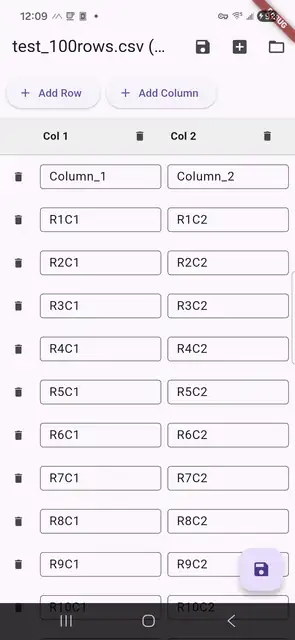

CSV Editor is a simple, lightweight app for viewing and editing CSV (comma-separated values) files on your Android device. Features: • Open CSV files from your device storage • Create new CSV files from scratch • Edit individual cells in a spreadsheet-like view • Add and delete rows and columns • Sa
SHA-256: 04ba4e3e84d891d49e1c3462aae8164e2841f839b30795c5dbd33bfdafdea11f

امسح الكود لفتح صفحة التطبيق
Scan to open this app page
لو كنز مش متثبت عندك: نزّل متجر كنز.
Not installed? Get the Kanz store.